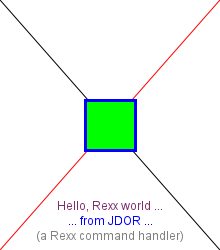

JDOR (Java drawing for ooRexx) is a Rexx command handler (implemented in Java taking advantage of BSF4ooRexx850 and later) that makes Java's 2D functionality available to Rexx programmers via commands that simplify the interaction, yet allow for creating the most challenging graphics (images) from Rexx.
Example "jdor_doc_sample.rex":
call BsfCommandHandler "add", "JDOR", jdor -- add the JDOR handler to ooRexx
address JDOR -- set default environment to the JDOR command handler
-- now we may use JDOR commands, executed by default by the JDOR command handler
width =220 -- define width of image in pixels (there are 72 px to an inch)
height=250 -- define height of image in pixels (there are 72 px to an inch)
newImage width height -- create new bitmap with currX=0, currY=0, width=220, height=250
winShow -- show frame on screen
-- draw two lines forming a big X
drawLine (width-1) (height-1) -- from currX=0, currY=0
color red -- set the color to red (preregistered with nickname "RED")
moveTo (width-1) 0 -- currX=219, currY=0
position -- query current position
say "--> rc="pp(rc) -- RC refers to the previous command's result: "219 0" (currX=219, currY=0)
drawLine 0 (height-1) -- from currX=219, currY=0
-- draw a rectangle at the center of the bitmap
len = 50 -- drawing a rectangle with each side being 50 px (a square)
moveTo (width-len)/2 (height-len)/2 -- go to the center minus half of the square's side lengths
color green -- set color to green (preregistered with nickname "GREEN")
fillRect len len -- fill the square with the green color
stroke str3 3 -- set line stroke to 3 points width, store it with nickname "STR3"
color blue -- set color to blue (preregistered with nickname "BLUE")
drawRect len len -- draw the frame with the blue color
-- draw a string (text) at the lower half of the bitmap
color somePurple 127 46 111 -- define a custom RGB color, store it with nickname "SOMEPURPLE"
color -- query current color
say "--> rc="pp(rc) -- show result from command (a Java color object)
say " rc~toString:" pp(rc~toString) -- shows the RGB intensities of the current color
-- draw three lines of centered strings at the bottom
lineHeight = 15 -- default font size is 12px, add 3 px lead
newY=height-40 -- draw the three strings at the bottom
clrs=("somePurple", "blue", "gray") -- define three different colors
text=("Hello, Rexx world ...", "... from JDOR ...", "(a Rexx command handler)") -- array of 3 strings
do counter c i=0 to 30 by lineHeight -- iterate over array of strings
s=text[c] -- fetch the string to draw from array
stringBounds s -- get the bounding box dimensions for this string
parse var rc . . w . -- parse the width of the string's bounding box
moveTo (width-w)/2 (newY+i) -- calc x position to center this string, set y position
color clrs[c] -- fetch and use the color from the array
drawString s -- draw the string
end
-- save the current image
saveImage "jdor_doc_sample.png" -- save image to file "jdor_doc_sample.png"
sleep 3.123 -- sleep for 3.123 seconds
::requires "BSF.CLS" -- get ooRexx-Java bridge, contains JDOR Rexx command handler
--> rc=[219 0]
--> rc=[java.awt.Color@5fa7e7ff]
rc~toString: [java.awt.Color[r=127,g=46,b=111]]
and create and save the following image (bitmap) using as filename "jdor_doc_sample.png":

The JDOR Rexx command handler makes Java2D functionality available to Rexx programmers. The commands are formed after the methods in the java.awt.Graphics and java.awt.Graphics2D Java classes. The only difference is that the x and y co-ordinates used by many methods as their first two arguments are handled differently. The Rexx programmer defines these co-ordinates with the moveTo x y command preceding command and they are therefore omitted from the Rexx commands matching the Java method names.
Many methods in the classes Graphis[2D] expect arguments to be integers. To ease programming argument values that may be calculated (e.g. x or y positions, width, height, ...) and yield decimal numbers will get rounded to integer values by JDOR.
Hint: using the redirection option of the Rexx ADDRESS keyword instruction (i.e., its WITH subkeyword with the redirection definitions) has the following effects:
ADDRESS JDOR WITH using input (.input) /* activate input redirection */Note: you need to supply at least one command (e.g. a comment command like
"-- some comment") to the command handler
such that it gets invoked and becomes able to note that input is redirected, such
that it takes the commands from the redirected input.
ADDRESS JDOR WITH using output (.output) /* activate error redirection */
ADDRESS JDOR WITH using error (.error) /* activate error redirection */In addition ooRexx will communicate the result of executing a command by setting the environment symbol .RS (value 0 indicates successful completion, -1 indicates a failure and 1 indicates an error).
ADDRESS JDOR /* all unqualified commands should go to this handler */
The ADDRESS keyword instruction is documented in the ooRexx reference book (rexxref.pdf) in "Chapter 2. Keyword Instructions", section "2.1 ADDRESS").
To Rexx programmers the following JDOR related materials may be helpful:
For the newcomer the following Java 2D related tutorial may be helpful (as of 2022-09-29):
- (dash),
; (semi colon),
/ (slash),
" (double quote),
' (single quote),
. (dot),
: (colon),
! (exclamation mark),
? (question mark),
_ (underscore). Therefore it is sufficient to prefix a command with one
of these characters in order to turn it into "comment command".
In general the arguments to a command are blank delimited. If supplying a Rexx variable, its referred to value will be supplied, if using a Rexx expression it will be evaluated and the resulting value will be supplied to the Rexx command handler.
If you wish to supply the name of a Rexx variable to a command (e.g. for the commands drawPolygon, drawPolyline, fillPolygon or getState) then make sure to enquote that variable name as otherwise its value gets supplied instead.
Commands need not be enquoted, unless their names collide with Rexx keyword names (which at the time of writing does not happen) or are used as Rexx variable names in your program.
Unquoted literals will be uppercased according to the Rexx rules and then supplied to the command handler. If commands or arguments are unquoted then they get uppercased as well and blanks between them will be reduced to a single blank according to the Rexx rules before supplying the resulting command with arguments to the Rexx command handler.
Hint: in general any command that allows for querying and setting a value will return the current value and in the case of setting it to a new value will return the old (previously current) value.
| Command | Argument(s) | Description | |||||||||||||||||||||||||||||||||||||||||||||||||||||||||||||||||||||||||||||||||||||||||||||||||||||||||||||||||||||||||||||||||||||||||||||||||||||||||||||||||||||||||||||||||||||||||||||||||||||||||||||||||||||||||||||||||||||||||||||||||||||||||||||||||||||||||||||||||||||||||||||||||||||||||||||||||||||||||||||||||||||||||||||||||||||||||||||||||||||||||||||||||||||||||||||||||||||||||||||||||||||||||||||||||||||||||||||||||||||||||||||||||||||||||||||||||||||||||||||||||
|---|---|---|---|---|---|---|---|---|---|---|---|---|---|---|---|---|---|---|---|---|---|---|---|---|---|---|---|---|---|---|---|---|---|---|---|---|---|---|---|---|---|---|---|---|---|---|---|---|---|---|---|---|---|---|---|---|---|---|---|---|---|---|---|---|---|---|---|---|---|---|---|---|---|---|---|---|---|---|---|---|---|---|---|---|---|---|---|---|---|---|---|---|---|---|---|---|---|---|---|---|---|---|---|---|---|---|---|---|---|---|---|---|---|---|---|---|---|---|---|---|---|---|---|---|---|---|---|---|---|---|---|---|---|---|---|---|---|---|---|---|---|---|---|---|---|---|---|---|---|---|---|---|---|---|---|---|---|---|---|---|---|---|---|---|---|---|---|---|---|---|---|---|---|---|---|---|---|---|---|---|---|---|---|---|---|---|---|---|---|---|---|---|---|---|---|---|---|---|---|---|---|---|---|---|---|---|---|---|---|---|---|---|---|---|---|---|---|---|---|---|---|---|---|---|---|---|---|---|---|---|---|---|---|---|---|---|---|---|---|---|---|---|---|---|---|---|---|---|---|---|---|---|---|---|---|---|---|---|---|---|---|---|---|---|---|---|---|---|---|---|---|---|---|---|---|---|---|---|---|---|---|---|---|---|---|---|---|---|---|---|---|---|---|---|---|---|---|---|---|---|---|---|---|---|---|---|---|---|---|---|---|---|---|---|---|---|---|---|---|---|---|---|---|---|---|---|---|---|---|---|---|---|---|---|---|---|---|---|---|---|---|---|---|---|---|---|---|---|---|---|---|---|---|---|---|---|---|---|---|---|---|---|---|---|---|---|---|---|---|---|---|---|---|---|---|---|---|---|---|---|---|---|---|---|---|---|---|---|---|---|---|---|---|---|---|---|---|---|---|---|---|---|---|---|---|---|---|---|---|---|---|---|---|---|---|---|---|---|---|---|---|---|---|---|---|---|---|---|---|---|---|---|---|---|---|---|---|---|---|---|---|---|---|---|---|---|---|---|---|---|---|---|---|---|---|---|---|---|---|---|---|---|---|---|---|---|---|---|---|---|---|---|---|---|---|---|---|---|---|---|---|---|---|
| "areaAdd" | The constructive area geometry (CAG) "add" operation, cf. Constructing Complex Shapes from Geometry Primitives. The shapeNickName argument gets uppercased and used to look it up in the shape registry or if not found from a Rexx variable of the same name and uses that shape instead. | ||||||||||||||||||||||||||||||||||||||||||||||||||||||||||||||||||||||||||||||||||||||||||||||||||||||||||||||||||||||||||||||||||||||||||||||||||||||||||||||||||||||||||||||||||||||||||||||||||||||||||||||||||||||||||||||||||||||||||||||||||||||||||||||||||||||||||||||||||||||||||||||||||||||||||||||||||||||||||||||||||||||||||||||||||||||||||||||||||||||||||||||||||||||||||||||||||||||||||||||||||||||||||||||||||||||||||||||||||||||||||||||||||||||||||||||||||||||||||||||||||
| areaNickName shapeNickName | areaNickName the registered area shape that will be changed by adding the area of the shapeNickName as the argument. If shapeNickName is not yet of type java.awt.geom.Area then an Area gets created from it and used as the argument. | ||||||||||||||||||||||||||||||||||||||||||||||||||||||||||||||||||||||||||||||||||||||||||||||||||||||||||||||||||||||||||||||||||||||||||||||||||||||||||||||||||||||||||||||||||||||||||||||||||||||||||||||||||||||||||||||||||||||||||||||||||||||||||||||||||||||||||||||||||||||||||||||||||||||||||||||||||||||||||||||||||||||||||||||||||||||||||||||||||||||||||||||||||||||||||||||||||||||||||||||||||||||||||||||||||||||||||||||||||||||||||||||||||||||||||||||||||||||||||||||||||
| "areaExclusiveOr" | The constructive area geometry (CAG) "exclusiveOr" operation, cf. Constructing Complex Shapes from Geometry Primitives. The shapeNickName argument gets uppercased and used to look it up in the shape registry or if not found from a Rexx variable of the same name and uses that shape instead. | ||||||||||||||||||||||||||||||||||||||||||||||||||||||||||||||||||||||||||||||||||||||||||||||||||||||||||||||||||||||||||||||||||||||||||||||||||||||||||||||||||||||||||||||||||||||||||||||||||||||||||||||||||||||||||||||||||||||||||||||||||||||||||||||||||||||||||||||||||||||||||||||||||||||||||||||||||||||||||||||||||||||||||||||||||||||||||||||||||||||||||||||||||||||||||||||||||||||||||||||||||||||||||||||||||||||||||||||||||||||||||||||||||||||||||||||||||||||||||||||||||
| areaNickName shapeNickName | areaNickName the registered area shape that will be changed by applying the exclusiveOr operation using the area of the shapeNickName as the argument. If shapeNickName is not yet of type java.awt.geom.Area then an Area gets created from it and used as the argument. | ||||||||||||||||||||||||||||||||||||||||||||||||||||||||||||||||||||||||||||||||||||||||||||||||||||||||||||||||||||||||||||||||||||||||||||||||||||||||||||||||||||||||||||||||||||||||||||||||||||||||||||||||||||||||||||||||||||||||||||||||||||||||||||||||||||||||||||||||||||||||||||||||||||||||||||||||||||||||||||||||||||||||||||||||||||||||||||||||||||||||||||||||||||||||||||||||||||||||||||||||||||||||||||||||||||||||||||||||||||||||||||||||||||||||||||||||||||||||||||||||||
| "areaIntersect" | The constructive area geometry (CAG) "intersect" operation, cf. Constructing Complex Shapes from Geometry Primitives. The shapeNickName argument gets uppercased and used to look it up in the shape registry or if not found from a Rexx variable of the same name and uses that shape instead. | ||||||||||||||||||||||||||||||||||||||||||||||||||||||||||||||||||||||||||||||||||||||||||||||||||||||||||||||||||||||||||||||||||||||||||||||||||||||||||||||||||||||||||||||||||||||||||||||||||||||||||||||||||||||||||||||||||||||||||||||||||||||||||||||||||||||||||||||||||||||||||||||||||||||||||||||||||||||||||||||||||||||||||||||||||||||||||||||||||||||||||||||||||||||||||||||||||||||||||||||||||||||||||||||||||||||||||||||||||||||||||||||||||||||||||||||||||||||||||||||||||
| areaNickName shapeNickName | areaNickName the registered area shape that will be changed by applying the intersect operation using the area of the shapeNickName as argument. If shapeNickName is not yet of type java.awt.geom.Area then an Area gets created from it and used as the argument. | ||||||||||||||||||||||||||||||||||||||||||||||||||||||||||||||||||||||||||||||||||||||||||||||||||||||||||||||||||||||||||||||||||||||||||||||||||||||||||||||||||||||||||||||||||||||||||||||||||||||||||||||||||||||||||||||||||||||||||||||||||||||||||||||||||||||||||||||||||||||||||||||||||||||||||||||||||||||||||||||||||||||||||||||||||||||||||||||||||||||||||||||||||||||||||||||||||||||||||||||||||||||||||||||||||||||||||||||||||||||||||||||||||||||||||||||||||||||||||||||||||
| "areaSubtract" | The constructive area geometry (CAG) "subtract" operation, cf. Constructing Complex Shapes from Geometry Primitives. The shapeNickName argument gets uppercased and used to look it up in the shape registry or if not found from a Rexx variable of the same name and uses that shape instead. | ||||||||||||||||||||||||||||||||||||||||||||||||||||||||||||||||||||||||||||||||||||||||||||||||||||||||||||||||||||||||||||||||||||||||||||||||||||||||||||||||||||||||||||||||||||||||||||||||||||||||||||||||||||||||||||||||||||||||||||||||||||||||||||||||||||||||||||||||||||||||||||||||||||||||||||||||||||||||||||||||||||||||||||||||||||||||||||||||||||||||||||||||||||||||||||||||||||||||||||||||||||||||||||||||||||||||||||||||||||||||||||||||||||||||||||||||||||||||||||||||||
| areaNickName shapeNickName | areaNickName the registered area shape that will be changed by applying the subtract operation using the area of the shapeNickName as argument. If shapeNickName is not yet of type java.awt.geom.Area then an Area gets created from it and used as the argument. | ||||||||||||||||||||||||||||||||||||||||||||||||||||||||||||||||||||||||||||||||||||||||||||||||||||||||||||||||||||||||||||||||||||||||||||||||||||||||||||||||||||||||||||||||||||||||||||||||||||||||||||||||||||||||||||||||||||||||||||||||||||||||||||||||||||||||||||||||||||||||||||||||||||||||||||||||||||||||||||||||||||||||||||||||||||||||||||||||||||||||||||||||||||||||||||||||||||||||||||||||||||||||||||||||||||||||||||||||||||||||||||||||||||||||||||||||||||||||||||||||||
| "areaTransform" | Transforms the area shape. The transformNickName argument gets uppercased and used to look it up in the transform registry or if not found from a Rexx variable of the same name and uses that transform (an AffinityTransform) instead. | ||||||||||||||||||||||||||||||||||||||||||||||||||||||||||||||||||||||||||||||||||||||||||||||||||||||||||||||||||||||||||||||||||||||||||||||||||||||||||||||||||||||||||||||||||||||||||||||||||||||||||||||||||||||||||||||||||||||||||||||||||||||||||||||||||||||||||||||||||||||||||||||||||||||||||||||||||||||||||||||||||||||||||||||||||||||||||||||||||||||||||||||||||||||||||||||||||||||||||||||||||||||||||||||||||||||||||||||||||||||||||||||||||||||||||||||||||||||||||||||||||
| areaNickName transformNickName | Transforms the area shape stored under the areaNickName and applies the transform stored under the transformNickName to it. | ||||||||||||||||||||||||||||||||||||||||||||||||||||||||||||||||||||||||||||||||||||||||||||||||||||||||||||||||||||||||||||||||||||||||||||||||||||||||||||||||||||||||||||||||||||||||||||||||||||||||||||||||||||||||||||||||||||||||||||||||||||||||||||||||||||||||||||||||||||||||||||||||||||||||||||||||||||||||||||||||||||||||||||||||||||||||||||||||||||||||||||||||||||||||||||||||||||||||||||||||||||||||||||||||||||||||||||||||||||||||||||||||||||||||||||||||||||||||||||||||||
| "assignRC" | Allows to assign the current value of the Rexx variable RC
(set when a command returns a value) to a Rexx variable with the supplied name.
This allows for creating self contained macros (redirecting the output will protocol the commands which can later be used for replaying those commands) that need to refer to returned values later. Note: supplying Rexx variable names to commands will supply the value the Rexx variable points to. Therefore it is advised to enquote such commands, at least the Rexx variable name argument. | ||||||||||||||||||||||||||||||||||||||||||||||||||||||||||||||||||||||||||||||||||||||||||||||||||||||||||||||||||||||||||||||||||||||||||||||||||||||||||||||||||||||||||||||||||||||||||||||||||||||||||||||||||||||||||||||||||||||||||||||||||||||||||||||||||||||||||||||||||||||||||||||||||||||||||||||||||||||||||||||||||||||||||||||||||||||||||||||||||||||||||||||||||||||||||||||||||||||||||||||||||||||||||||||||||||||||||||||||||||||||||||||||||||||||||||||||||||||||||||||||||
| rexxVariableName | The name of a Rexx variable which gets the current value of the Rexx variable RC assigned to for later use. | ||||||||||||||||||||||||||||||||||||||||||||||||||||||||||||||||||||||||||||||||||||||||||||||||||||||||||||||||||||||||||||||||||||||||||||||||||||||||||||||||||||||||||||||||||||||||||||||||||||||||||||||||||||||||||||||||||||||||||||||||||||||||||||||||||||||||||||||||||||||||||||||||||||||||||||||||||||||||||||||||||||||||||||||||||||||||||||||||||||||||||||||||||||||||||||||||||||||||||||||||||||||||||||||||||||||||||||||||||||||||||||||||||||||||||||||||||||||||||||||||||
| "background" | Queries and optionally sets the background color to a registered color.
Querying the current value (no argument supplied) will return it, setting (changing) the value to a new color value will return the old (previously set) value via the Rexx variable RC. Cf. the Java documentation for the Java class Graphics[2D] and the methods: getBackground(), setBackground(...). | ||||||||||||||||||||||||||||||||||||||||||||||||||||||||||||||||||||||||||||||||||||||||||||||||||||||||||||||||||||||||||||||||||||||||||||||||||||||||||||||||||||||||||||||||||||||||||||||||||||||||||||||||||||||||||||||||||||||||||||||||||||||||||||||||||||||||||||||||||||||||||||||||||||||||||||||||||||||||||||||||||||||||||||||||||||||||||||||||||||||||||||||||||||||||||||||||||||||||||||||||||||||||||||||||||||||||||||||||||||||||||||||||||||||||||||||||||||||||||||||||||
| colorNickName | The name of a registered color (cf. color command) or the name of a Rexx variable referring to a color to which the background color should be set to. | ||||||||||||||||||||||||||||||||||||||||||||||||||||||||||||||||||||||||||||||||||||||||||||||||||||||||||||||||||||||||||||||||||||||||||||||||||||||||||||||||||||||||||||||||||||||||||||||||||||||||||||||||||||||||||||||||||||||||||||||||||||||||||||||||||||||||||||||||||||||||||||||||||||||||||||||||||||||||||||||||||||||||||||||||||||||||||||||||||||||||||||||||||||||||||||||||||||||||||||||||||||||||||||||||||||||||||||||||||||||||||||||||||||||||||||||||||||||||||||||||||
| "clearRect" | Clears a rectangle of the supplied width and height
at the current x and y position (cf. goto command),
using the background (cf. background command) color.
Cf. the Java documentation for the Java class Graphics[2D] and the method clearRect(...). | ||||||||||||||||||||||||||||||||||||||||||||||||||||||||||||||||||||||||||||||||||||||||||||||||||||||||||||||||||||||||||||||||||||||||||||||||||||||||||||||||||||||||||||||||||||||||||||||||||||||||||||||||||||||||||||||||||||||||||||||||||||||||||||||||||||||||||||||||||||||||||||||||||||||||||||||||||||||||||||||||||||||||||||||||||||||||||||||||||||||||||||||||||||||||||||||||||||||||||||||||||||||||||||||||||||||||||||||||||||||||||||||||||||||||||||||||||||||||||||||||||
| width height | width and height in pixels of the rectangle. | ||||||||||||||||||||||||||||||||||||||||||||||||||||||||||||||||||||||||||||||||||||||||||||||||||||||||||||||||||||||||||||||||||||||||||||||||||||||||||||||||||||||||||||||||||||||||||||||||||||||||||||||||||||||||||||||||||||||||||||||||||||||||||||||||||||||||||||||||||||||||||||||||||||||||||||||||||||||||||||||||||||||||||||||||||||||||||||||||||||||||||||||||||||||||||||||||||||||||||||||||||||||||||||||||||||||||||||||||||||||||||||||||||||||||||||||||||||||||||||||||||
| "clip" | Queries and optionally sets a clipping area of an image. Returns a
blank delimited string with the x, y,
width and height values of the previously defined clipping rectangle (area)
or .nil if no such area was defined
via the Rexx variable RC. If a clipping area exists already,
then the intersection with it will be the new clipping area.
Cf. the Java documentation for the Java class Graphics[2D] and the methods getClipBounds(), clipRect(...). | ||||||||||||||||||||||||||||||||||||||||||||||||||||||||||||||||||||||||||||||||||||||||||||||||||||||||||||||||||||||||||||||||||||||||||||||||||||||||||||||||||||||||||||||||||||||||||||||||||||||||||||||||||||||||||||||||||||||||||||||||||||||||||||||||||||||||||||||||||||||||||||||||||||||||||||||||||||||||||||||||||||||||||||||||||||||||||||||||||||||||||||||||||||||||||||||||||||||||||||||||||||||||||||||||||||||||||||||||||||||||||||||||||||||||||||||||||||||||||||||||||
| x y width height | x position on the x-axis, the y position on the y-axis, the width and the height in pixels of the rectangle. | ||||||||||||||||||||||||||||||||||||||||||||||||||||||||||||||||||||||||||||||||||||||||||||||||||||||||||||||||||||||||||||||||||||||||||||||||||||||||||||||||||||||||||||||||||||||||||||||||||||||||||||||||||||||||||||||||||||||||||||||||||||||||||||||||||||||||||||||||||||||||||||||||||||||||||||||||||||||||||||||||||||||||||||||||||||||||||||||||||||||||||||||||||||||||||||||||||||||||||||||||||||||||||||||||||||||||||||||||||||||||||||||||||||||||||||||||||||||||||||||||||
| "clipRemove" | Removes clip from image, if any defined.
Cf. the Java documentation for the Java class Graphics[2D] and the method setClip(null). | ||||||||||||||||||||||||||||||||||||||||||||||||||||||||||||||||||||||||||||||||||||||||||||||||||||||||||||||||||||||||||||||||||||||||||||||||||||||||||||||||||||||||||||||||||||||||||||||||||||||||||||||||||||||||||||||||||||||||||||||||||||||||||||||||||||||||||||||||||||||||||||||||||||||||||||||||||||||||||||||||||||||||||||||||||||||||||||||||||||||||||||||||||||||||||||||||||||||||||||||||||||||||||||||||||||||||||||||||||||||||||||||||||||||||||||||||||||||||||||||||||
| "color" | Query, get and set, define and set the color.
Querying the current value (no argument supplied) will return it, setting (changing) the value to a new value will return the old (previously set) value via the Rexx variable RC. Supplying only the colorNickName argument will load the color from the internal register or from a Rexx variable by that name referring to a color and assign it to the GC to be used for drawing from now on. Supplying in addition intensity (cf. RGB color or RGBA color) for the colors red, green, blue, and optionally alpha, a java.awt.Color of that type gets created, registered with the supplied colorNickName and then used for setting the new color. Cf. the Java documentation for the Java class Graphics[2D] and the methods getColor(), setColor(...), as well as the Java class java.awt.Color. | ||||||||||||||||||||||||||||||||||||||||||||||||||||||||||||||||||||||||||||||||||||||||||||||||||||||||||||||||||||||||||||||||||||||||||||||||||||||||||||||||||||||||||||||||||||||||||||||||||||||||||||||||||||||||||||||||||||||||||||||||||||||||||||||||||||||||||||||||||||||||||||||||||||||||||||||||||||||||||||||||||||||||||||||||||||||||||||||||||||||||||||||||||||||||||||||||||||||||||||||||||||||||||||||||||||||||||||||||||||||||||||||||||||||||||||||||||||||||||||||||||
| colorNickName | colorNickName gets uppercased and is used to look up the internal color registry for the denoted color or the name of a Rexx variable referring to a color which should be used from now on. The previously defined color gets gets returned via the Rexx variable RC. | ||||||||||||||||||||||||||||||||||||||||||||||||||||||||||||||||||||||||||||||||||||||||||||||||||||||||||||||||||||||||||||||||||||||||||||||||||||||||||||||||||||||||||||||||||||||||||||||||||||||||||||||||||||||||||||||||||||||||||||||||||||||||||||||||||||||||||||||||||||||||||||||||||||||||||||||||||||||||||||||||||||||||||||||||||||||||||||||||||||||||||||||||||||||||||||||||||||||||||||||||||||||||||||||||||||||||||||||||||||||||||||||||||||||||||||||||||||||||||||||||||
| colorNickName r g b [alpha] | This command creates a color using the supplied intensities (cf. RGB color or RGBA color) for each of the colors red, green, blue and optionally for alpha. This color will be used from now on and gets stored in the color registry using the supplied colorNickName in uppercase. The previously defined color gets returned via the Rexx variable RC. | ||||||||||||||||||||||||||||||||||||||||||||||||||||||||||||||||||||||||||||||||||||||||||||||||||||||||||||||||||||||||||||||||||||||||||||||||||||||||||||||||||||||||||||||||||||||||||||||||||||||||||||||||||||||||||||||||||||||||||||||||||||||||||||||||||||||||||||||||||||||||||||||||||||||||||||||||||||||||||||||||||||||||||||||||||||||||||||||||||||||||||||||||||||||||||||||||||||||||||||||||||||||||||||||||||||||||||||||||||||||||||||||||||||||||||||||||||||||||||||||||||
| "composite" | Queries and optionally sets or creates the composite value (an instance of the
Java class java.awt.AlphaComposite).
Querying the current value (no argument supplied) will return it, setting (changing) the value to a new value will return the old (previously set) value via the Rexx variable RC. Cf. the Java documentation for the Java class Graphics[2D] and the methods getComposite(), setComposite(...), and the Java class java.awt.AlphaComposite with its constant fields and the method getInstance(...). | ||||||||||||||||||||||||||||||||||||||||||||||||||||||||||||||||||||||||||||||||||||||||||||||||||||||||||||||||||||||||||||||||||||||||||||||||||||||||||||||||||||||||||||||||||||||||||||||||||||||||||||||||||||||||||||||||||||||||||||||||||||||||||||||||||||||||||||||||||||||||||||||||||||||||||||||||||||||||||||||||||||||||||||||||||||||||||||||||||||||||||||||||||||||||||||||||||||||||||||||||||||||||||||||||||||||||||||||||||||||||||||||||||||||||||||||||||||||||||||||||||
| rule [alpha] | rule: is a number or a constant name, i.e. one of
CLEAR (1),
DST (9),
DST_ATOP (11),
DST_IN (6),
DST_OUT (8),
DST_OVER (4),
SRC (2),
SRC_ATOP (10),
SRC_IN (5),
SRC_OUT (7),
SRC_OVER (3),
XOR (12).
alpha: is an optional value between 0.0 and 1.0. | ||||||||||||||||||||||||||||||||||||||||||||||||||||||||||||||||||||||||||||||||||||||||||||||||||||||||||||||||||||||||||||||||||||||||||||||||||||||||||||||||||||||||||||||||||||||||||||||||||||||||||||||||||||||||||||||||||||||||||||||||||||||||||||||||||||||||||||||||||||||||||||||||||||||||||||||||||||||||||||||||||||||||||||||||||||||||||||||||||||||||||||||||||||||||||||||||||||||||||||||||||||||||||||||||||||||||||||||||||||||||||||||||||||||||||||||||||||||||||||||||||
| "copyArea" | Copies an area of the image to the given distance.
Cf. the Java documentation for the Java class Graphics and the method copyArea(...). | ||||||||||||||||||||||||||||||||||||||||||||||||||||||||||||||||||||||||||||||||||||||||||||||||||||||||||||||||||||||||||||||||||||||||||||||||||||||||||||||||||||||||||||||||||||||||||||||||||||||||||||||||||||||||||||||||||||||||||||||||||||||||||||||||||||||||||||||||||||||||||||||||||||||||||||||||||||||||||||||||||||||||||||||||||||||||||||||||||||||||||||||||||||||||||||||||||||||||||||||||||||||||||||||||||||||||||||||||||||||||||||||||||||||||||||||||||||||||||||||||||
| width height dX dY | width and height in pixels of the image area to copy, dX (can be negative) and dY (can be negative) the distance in pixels where to copy to. | ||||||||||||||||||||||||||||||||||||||||||||||||||||||||||||||||||||||||||||||||||||||||||||||||||||||||||||||||||||||||||||||||||||||||||||||||||||||||||||||||||||||||||||||||||||||||||||||||||||||||||||||||||||||||||||||||||||||||||||||||||||||||||||||||||||||||||||||||||||||||||||||||||||||||||||||||||||||||||||||||||||||||||||||||||||||||||||||||||||||||||||||||||||||||||||||||||||||||||||||||||||||||||||||||||||||||||||||||||||||||||||||||||||||||||||||||||||||||||||||||||
| "draw3DRect" | Draws a rectangle with 3D appearance (raised or sunken).
Cf. the Java documentation for the Java class Graphics[2D] and the method draw3DRect(...). | ||||||||||||||||||||||||||||||||||||||||||||||||||||||||||||||||||||||||||||||||||||||||||||||||||||||||||||||||||||||||||||||||||||||||||||||||||||||||||||||||||||||||||||||||||||||||||||||||||||||||||||||||||||||||||||||||||||||||||||||||||||||||||||||||||||||||||||||||||||||||||||||||||||||||||||||||||||||||||||||||||||||||||||||||||||||||||||||||||||||||||||||||||||||||||||||||||||||||||||||||||||||||||||||||||||||||||||||||||||||||||||||||||||||||||||||||||||||||||||||||||
| width height raised | width and height in pixels of the rectangle, raised needs to be either set to .true for raised or to .false for sunken appearance. | ||||||||||||||||||||||||||||||||||||||||||||||||||||||||||||||||||||||||||||||||||||||||||||||||||||||||||||||||||||||||||||||||||||||||||||||||||||||||||||||||||||||||||||||||||||||||||||||||||||||||||||||||||||||||||||||||||||||||||||||||||||||||||||||||||||||||||||||||||||||||||||||||||||||||||||||||||||||||||||||||||||||||||||||||||||||||||||||||||||||||||||||||||||||||||||||||||||||||||||||||||||||||||||||||||||||||||||||||||||||||||||||||||||||||||||||||||||||||||||||||||
| "drawArc" | Draws an arc which is part of the oval inscribed in a rectangle.
Cf. the Java documentation for the Java class Graphics[2D] and the method drawArc(...)(). | ||||||||||||||||||||||||||||||||||||||||||||||||||||||||||||||||||||||||||||||||||||||||||||||||||||||||||||||||||||||||||||||||||||||||||||||||||||||||||||||||||||||||||||||||||||||||||||||||||||||||||||||||||||||||||||||||||||||||||||||||||||||||||||||||||||||||||||||||||||||||||||||||||||||||||||||||||||||||||||||||||||||||||||||||||||||||||||||||||||||||||||||||||||||||||||||||||||||||||||||||||||||||||||||||||||||||||||||||||||||||||||||||||||||||||||||||||||||||||||||||||
| width height startAngle arcAngle | width and height in pixels of the rectangle, startAngle in degrees (0 is the 3 o'clock position), arcAngle angular extend in degrees relative to startAngle (angles increase counterclockwise). | ||||||||||||||||||||||||||||||||||||||||||||||||||||||||||||||||||||||||||||||||||||||||||||||||||||||||||||||||||||||||||||||||||||||||||||||||||||||||||||||||||||||||||||||||||||||||||||||||||||||||||||||||||||||||||||||||||||||||||||||||||||||||||||||||||||||||||||||||||||||||||||||||||||||||||||||||||||||||||||||||||||||||||||||||||||||||||||||||||||||||||||||||||||||||||||||||||||||||||||||||||||||||||||||||||||||||||||||||||||||||||||||||||||||||||||||||||||||||||||||||||
| "drawImage" | Draws an image which got previously loaded from the filesystem
with the command loadImage and stored internally
with an imageNickName in the internal image registry, or an image that got
pushed with a imageNickName in the command pushImage,
or stored in a Rexx variable.
Cf. the Java documentation for the Java class Graphics[2D] and the method drawImage(...). | ||||||||||||||||||||||||||||||||||||||||||||||||||||||||||||||||||||||||||||||||||||||||||||||||||||||||||||||||||||||||||||||||||||||||||||||||||||||||||||||||||||||||||||||||||||||||||||||||||||||||||||||||||||||||||||||||||||||||||||||||||||||||||||||||||||||||||||||||||||||||||||||||||||||||||||||||||||||||||||||||||||||||||||||||||||||||||||||||||||||||||||||||||||||||||||||||||||||||||||||||||||||||||||||||||||||||||||||||||||||||||||||||||||||||||||||||||||||||||||||||||
| imageNickName [bkgColor] | imageNickName denotes the name of an image stored in the
internal image registry or the name of a Rexx variable referring
to an image. Draws as much of the image as possible.
Optional bkgColor is the colorNickName of a previously stored color. | ||||||||||||||||||||||||||||||||||||||||||||||||||||||||||||||||||||||||||||||||||||||||||||||||||||||||||||||||||||||||||||||||||||||||||||||||||||||||||||||||||||||||||||||||||||||||||||||||||||||||||||||||||||||||||||||||||||||||||||||||||||||||||||||||||||||||||||||||||||||||||||||||||||||||||||||||||||||||||||||||||||||||||||||||||||||||||||||||||||||||||||||||||||||||||||||||||||||||||||||||||||||||||||||||||||||||||||||||||||||||||||||||||||||||||||||||||||||||||||||||||
| imageNickName width height [bkgColor] | imageNickName denotes the name of an image stored in the
internal image registry or the name of a Rexx variable referring
to an image.
Draws as much of the image as possible scaled to the
width and height in pixels.
Optional bkgColor is the colorNickName of a previously stored color. | ||||||||||||||||||||||||||||||||||||||||||||||||||||||||||||||||||||||||||||||||||||||||||||||||||||||||||||||||||||||||||||||||||||||||||||||||||||||||||||||||||||||||||||||||||||||||||||||||||||||||||||||||||||||||||||||||||||||||||||||||||||||||||||||||||||||||||||||||||||||||||||||||||||||||||||||||||||||||||||||||||||||||||||||||||||||||||||||||||||||||||||||||||||||||||||||||||||||||||||||||||||||||||||||||||||||||||||||||||||||||||||||||||||||||||||||||||||||||||||||||||
| imageNickName width height srcX1 srcY1 srcX2 srcY2 [bkgColor] | imageNickName denotes the name of an image stored in the
internal image registry or the name of a Rexx variable referring
to an image.
Draws as much of the image as possible scaled to the
width and height in pixels, using from the image the rectangle
with the first corner with the coordinate srcX1 and srcY1 and
the second corner with the coordinate srcX2 and srcY2.
Optional bkgColor is the colorNickName of a previously stored color. | ||||||||||||||||||||||||||||||||||||||||||||||||||||||||||||||||||||||||||||||||||||||||||||||||||||||||||||||||||||||||||||||||||||||||||||||||||||||||||||||||||||||||||||||||||||||||||||||||||||||||||||||||||||||||||||||||||||||||||||||||||||||||||||||||||||||||||||||||||||||||||||||||||||||||||||||||||||||||||||||||||||||||||||||||||||||||||||||||||||||||||||||||||||||||||||||||||||||||||||||||||||||||||||||||||||||||||||||||||||||||||||||||||||||||||||||||||||||||||||||||||
| "drawLine" | Draws a line.
Cf. the Java documentation for the Java class Graphics[2D] and the method drawLine(...). | ||||||||||||||||||||||||||||||||||||||||||||||||||||||||||||||||||||||||||||||||||||||||||||||||||||||||||||||||||||||||||||||||||||||||||||||||||||||||||||||||||||||||||||||||||||||||||||||||||||||||||||||||||||||||||||||||||||||||||||||||||||||||||||||||||||||||||||||||||||||||||||||||||||||||||||||||||||||||||||||||||||||||||||||||||||||||||||||||||||||||||||||||||||||||||||||||||||||||||||||||||||||||||||||||||||||||||||||||||||||||||||||||||||||||||||||||||||||||||||||||||
| toX toY | toX and toY, denoting the endpoint of the line (starting from currX and currY). | ||||||||||||||||||||||||||||||||||||||||||||||||||||||||||||||||||||||||||||||||||||||||||||||||||||||||||||||||||||||||||||||||||||||||||||||||||||||||||||||||||||||||||||||||||||||||||||||||||||||||||||||||||||||||||||||||||||||||||||||||||||||||||||||||||||||||||||||||||||||||||||||||||||||||||||||||||||||||||||||||||||||||||||||||||||||||||||||||||||||||||||||||||||||||||||||||||||||||||||||||||||||||||||||||||||||||||||||||||||||||||||||||||||||||||||||||||||||||||||||||||
| "drawOval" | Draws an oval.
Cf. the Java documentation for the Java class Graphics[2D] and the method drawOval(). | ||||||||||||||||||||||||||||||||||||||||||||||||||||||||||||||||||||||||||||||||||||||||||||||||||||||||||||||||||||||||||||||||||||||||||||||||||||||||||||||||||||||||||||||||||||||||||||||||||||||||||||||||||||||||||||||||||||||||||||||||||||||||||||||||||||||||||||||||||||||||||||||||||||||||||||||||||||||||||||||||||||||||||||||||||||||||||||||||||||||||||||||||||||||||||||||||||||||||||||||||||||||||||||||||||||||||||||||||||||||||||||||||||||||||||||||||||||||||||||||||||
| width height | Draws an oval in a rectangle of width and height pixels. If width and height are of the same length the oval will be a circle. | ||||||||||||||||||||||||||||||||||||||||||||||||||||||||||||||||||||||||||||||||||||||||||||||||||||||||||||||||||||||||||||||||||||||||||||||||||||||||||||||||||||||||||||||||||||||||||||||||||||||||||||||||||||||||||||||||||||||||||||||||||||||||||||||||||||||||||||||||||||||||||||||||||||||||||||||||||||||||||||||||||||||||||||||||||||||||||||||||||||||||||||||||||||||||||||||||||||||||||||||||||||||||||||||||||||||||||||||||||||||||||||||||||||||||||||||||||||||||||||||||||
| "drawPolygon" | Draws a polygon using nPoints coordinates from
xPoints-array
and yPoints-array. The polygon gets closed by drawing a line from the first and last point.
Cf. the Java documentation for the Java class Graphics[2D] and the method drawPolygon(...).
|
| xPoints-array yPoints-array nPoints
| Draws a polygon consisting of nPoints taken from the
xPoints-array and
yPoints-array.
If the endpoint is not the same coordinate as the first point,
the polygon gets closed by drawing a line from the
first to the last point.
|
| "drawPolyline"
| Draws a polyline using nPoints coordinates from
xPoints-array and yPoints-array.
| Cf. the Java documentation for the Java class Graphics[2D] and the method drawPolyline(...).
|
| xPoints-array yPoints-array nPoints
| Draws a polyline consisting of nPoints taken from
xPoints-array and
yPoints-array.
|
| "drawRect"
| Draws a rectangle of width and height.
| Cf. the Java documentation for the Java class Graphics[2D] and the method drawRect(...).
|
| width height
| Draws a rectangle of width and
height pixels. If width and
height are of the same length the rectangle will be a square.
|
| "drawRoundRect"
| Draws a round rectangle of width and height pixels. The
corners get rounded according to arcWidth and arcHeight pixels.
| Cf. the Java documentation for the Java class Graphics[2D] and the method drawRoundRect(...).
|
| width height arcWidth arcHeight
| Draws an oval in a rectangle of width and
height pixels where the corners are rounded using
arcWidth and arcHeight pixels.
If width, height, arcWidth and arcHeight
are of the same length the round rectangle will be in effect a circle.
|
| "drawString"
| Draws a string (text).
| Note: In order to preserve leading blanks in a string, only the first (delimiting) blank after the command drawString will be consumed, all following characters - including leading whitespace - are regarded to constitute the string to be drawn. Hint: if you have a need to know the bounds (a rectangle) of the string using the current font and the current graphics context you may want to use the command stringBounds. Cf. the Java documentation for the Java class Graphics[2D] and the method drawString(...).
|
| string
| string (text) that gets drawn.
|
| "fill3DRect"
| Fills a rectangle with 3D appearance (raised or sunken).
| Cf. the Java documentation for the Java class Graphics[2D] and the method fill3DRect(...).
|
| width height raised
| width and height in pixels of the rectangle,
raised is either set to .true for raised or to .false
for sunken appearance.
|
| "fillArc"
| Fills an arc which is part of the oval inscribed in a rectangle.
| Cf. the Java documentation for the Java class Graphics[2D] and the method fillArc(...)().
|
| width height startAngle arcAngle
| width and height in pixels of the rectangle,
startAngle in degrees (0 is the 3 o'clock position), arcAngle
angular extent in degrees relative to startAngle (angles increase counterclockwise).
|
| "fillOval"
| Fills an oval.
| Cf. the Java documentation for the Java class Graphics[2D] and the method fillOval().
|
| width height
| Fills an oval in a rectangle of width and
height pixels. If width and
height are of the same length the oval will be a circle.
|
| "fillPolygon"
| Fills a polygon using nPoints coordinates from xPoints-array
and yPoints-array.
| Note: The definition list above documents how these arrays can be supplied to the command handler. Cf. the Java documentation for the Java class Graphics[2D] and the method fillPolygon(...).
|
| xPoints-array yPoints-array nPoints
| Fills a polygon consisting of nPoints taken from the
xPoints-array and
yPoints-array.
If the endpoint is not the same coordinate as the first poing,
the polygon gets closed by filling a line from the
first to the last point.
|
| "fillRect"
| Fills a rectangle of width and height.
| Cf. the Java documentation for the Java class Graphics[2D] and the method fillRect(...).
|
| width height
| Fills a rectangle of width and
height pixels. If width and
height are of the same length the rectangle will be a square.
|
| "fillRoundRect"
| Fills a round rectangle of width and height pixels. The
corners get rounded according to arcWidth and arcHeight pixels.
| Cf. the Java documentation for the Java class Graphics[2D] and the method fillRoundRect(...).
|
| width height arcWidth arcHeight
| Fills an oval in a rectangle of width and
height pixels where the corners are rounded using
arcWidth and arcHeight pixels.
If width, height, arcWidth and arcHeight
are of the same length the round rectangle will be in effect a circle.
|
| "font"
| Query, get and set, define and set the GC's font.
| Querying the current value (no argument supplied) will return it, setting (changing) the value to a new value will return the old (previously set) value via the Rexx variable RC. Supplying only the fontNickName argument will load the font from the internal register or from a Rexx variable of that name which refers to a font and use it for drawing strings until it gets changed again. Supplying in addition the fontName, a java.awt.Font gets loaded from the system, registered with the supplied fontNickName and then used for setting the new font. The font size is taken from fontSize and the style from fontStyle unless the font name includes a trailing dash or blank, optionally a style (one of PLAIN, ITALIC, BOLD, BOLDITALIC) and/or a trailing dash or blank and size information (e.g. "Arial BOLD 18" or "Arial-BOLD-18", "Arial 18" or "Arial-BOLD"). Cf. the Java documentation for the Java class Graphics[2D] and the methods getFont(), setFont(...), as well as the Java class java.awt.Font and the method decode(fontName).
|
| fontNickName
| fontNickName gets uppercased and is used to look up the internal
font registry for the denoted font which should be used from now on
or taken as the name of a Rexx variable which refers to an font.
|
|
| fontNickName fontName
| This command loads a font with the given fontName from the system
using the current fontSize and fontStyle,
stores it in the font registry using the supplied fontNickName in
uppercase and returns it via the Rexx variable RC.
| The following logical font names are always available on all operating systems and can be used to set the fontName argument: "Dialog", "DialogInput", "Monospaced", "SansSerif" and "Serif".
| "fontSize"
| Queries and optionally sets the font size to be used when loading a new
font.
| Querying the current value (no argument supplied) will return it, setting (changing) the value to a new value will return the old (previously set) value via the Rexx variable RC. Cf. the Java documentation for the Java class Font and the constructors as well as the method getSize().
|
| size
| size (an integer value) that gets used when loading a new font, defaults to 12.
|
| "fontStyle"
| Queries and optionally sets the font style to be used when loading a new
font.
| Querying the current value (no argument supplied) will return it, setting (changing) the value to a new value will return the old (previously set) value via the Rexx variable RC. Cf. the Java documentation for the Java class Font and the constructors as well as the method getStyle().
|
| style
| style a number or symbolic name that gets used when loading a
new font, defaults to 0 (PLAIN). Additional font style
values are: 1 (BOLD),
2 (ITALIC) and
3 (BOLDITALIC).
|
| "GC"
| Queries the GC (graphical context) object (an
instance of the class Graphics[2D]) and returns it via the Rexx
variable RC upon return from this command. One can then use all
Graphics[2D] methods from an ooRexx program directly.
| Cf. the Java documentation for the Java class Graphics[2D].
| "getState"
| Creates an ooRexx StringTable object, inserts state
information and returns it via the Rexx variable RC. The
following entries are available:
|
|
| rexxVariableName
| optional rexxVariableName the Rexx variable name to store the ooRexx
StringTable object in the command context in addition.
|
| "goto" | "location" "moveTo" "pos" "position" Queries and optionally sets currX and currX in the current image.
| Querying the current value (no argument supplied) will return it, setting (changing) the value to a new value will return the old (previously set) value via the Rexx variable RC. Note: The command names goto, location, moveTo (used for the canonical representation of this command when output gets redirected), pos and position are aliases, synonyms.
|
| x [y]
| x gets used to set currX and y to set currY.
If the argument y is omitted, x is used to set currY as well.
|
| "gradientPaint"
| Get and set, define and set a gradientPaint (used for filling).
This command returns the old (previously set) paint value
via the Rexx variable RC.
| Supplying only the gradientPaintNickName argument will load the gradientPaint from the internal register and use it. Supplying additional arguments will cause a new gradient paint to be created, registered with the supplied gradientPaintNickName and then used for setting the current paint value to the new gradientPaint. Cf. the Java documentation for the Java class Graphics[2D] and the methods getPaint(), setPaint(...), as well as the Java class java.awt.GradientPaint.
|
| gradientPaintNickName
| gradientPaintNickName gets uppercased and is used to look up the internal
gradientPaint registry for the denoted gradient paint which should be used from now
on and gets returned via the Rexx variable RC.
|
|
| gradientPaintNickName x1 y1 colorName1 x2 y2 colorName2 [cyclic]
| This command creates a gradient paint from point x1,y1 with
color colorName1 to x2,y2 with color colorName2.
The optional cyclic arguments determines whether the gradient patterns should
cycle repeatedly between the two colors. This gradientPaint will be used from now on
and gets stored in the gradientPaint registry using the supplied
gradientPaintNickName in uppercase and returned via the
Rexx variable RC.
|
| "image"
| Queries an image object (an instance of the class
java.awt.image.BufferedImage) and returns it via the Rexx variable
RC upon return from this command.
With no argument returns the current image which can be referred
to via the Rexx variable RC upon return from this command.
Supplying the optional imageNickName argument will load and return
the image from the internal image register.
| One can then use all BufferedImage methods from an ooRexx program directly. Cf. the Java documentation for the Java class BufferedImage.
|
| imageNickName
| optional imageNickName gets uppercased and is used to look up the internal
image registry for the denoted image and gets returned via the Rexx variable RC.
|
| "imageCopy"
| Creates and returns a copy of an image which got previously loaded from the filesystem
with the command loadImage and stored internally
with an imageNickName in the internal image registry, or an image that got
pushed with a imageNickName in the command pushImage,
or stored in a Rexx variable.
|
|
| imageNickName [bkgColor]
| imageNickName denotes the name of an image stored in the
internal image registry or the name of a Rexx variable referring
to a BufferedImage.
|
| "imageSize"
| Query the image size (dimension). With no arguments returns the current image's
width and height which can be referred to via the Rexx variable
RC upon return from this command.
| Supplying the optional imageNickName argument will return the size of the image from the internal register, or from a Rexx variable referring to an image.
|
| imageNickName
| optional imageNickName gets uppercased and is used to look up the internal
image registry
or the name of a Rexx variable referring to an image,
get its size which is returned via the Rexx variable RC.
|
| "imageType"
| Query the image type. With no arguments returns the current image's
type which can be referred to via the Rexx variable RC upon return from this command.
| Supplying the optional imageNickName argument will return the type of the image from the internal register, or from a Rexx variable referring to an image.
|
| imageNickName
| optional imageNickName gets uppercased and is used to look up the internal
image registry or the name of a Rexx variable referring to an image,
get its type which is returned via the Rexx variable RC.
|
| "loadImage"
| Loads an image from fileName, stores it with the uppercased
imageNickName in the internal image registry and returns the image's
size (dimension), i.e. width and height via the Rexx variable RC.
| Cf. the Java documentation for the Java class javax.imageio.ImageIO and the method read(...).
|
| imageNickName fileName
| The fileName to load the image from, storing it with the uppercased
imageNickName in the internal image registry.
|
| "newImage" | "new" Creates a new image. By default the width and the height are
set to 500 and the type to the current value of
preferredImageType.
| Cf. the Java documentation for the Java class java.awt.image.BufferedImage and and its constants.
|
| width height [type]
| The size is given in width and height pixels. The optional type
allows to override the image type. If type is omitted the current value of
preferredImageType (defaults to 2
a.k.a. BufferedImage.TYPE_INT_ARGB) gets used.
|
| "paint"
| Queries and optionally sets current paint (used for filling).
| Querying the current value (no argument supplied) will return it, setting (changing) the value to a new value will return the old (previously set) value via the Rexx variable RC. Cf. the Java documentation for the Java class Graphics[2D] and the methods getPaint(), setPaint(...).
|
| nickName
| nickName in uppercase will be used to look up a gradientPaint and if not found
a color in the respective internal registries
or stored in a Rexx variable by that name
in this order.
|
| "popGC"
| Disposes the current GC
(Graphics[2D]) object and replaces it
by popping a GC from the stack, thereby resetting all
changes to that state and returns the popped (now current) GC
via the Rexx variable RC.
|
| "popImage"
| Pops the image from the stack and uses it to draw
on to the current image.
Returns the popped image via the Rexx variable RC upon return from this
command.
|
| "preferredImageType"
| Queries and optionally sets the preferred image type used for creating new images
(cf. new command).
Returns the image type via the Rexx variable RC upon return from this command.
| Cf. the Java documentation for the Java class java.awt.image.BufferedImage and and its constants.
|
| type
| denotes the new preferred image type and may have one
of the following values:
TYPE_3BYTE_BGR (5),
TYPE_4BYTE_ABGR (6),
TYPE_4BYTE_ABGR_PRE (7),
TYPE_BYTE_BINARY (12),
TYPE_BYTE_GRAY (10),
TYPE_BYTE_INDEXED (13),
TYPE_CUSTOM (0),
TYPE_INT_ARGB (2),
TYPE_INT_ARGB_PRE (3),
TYPE_INT_BGR (4),
TYPE_INT_RGB (1),
TYPE_USHORT_555_RGB (9),
TYPE_USHORT_565_RGB (8) and
TYPE_USHORT_GRAY (11).
|
| "printImage"
| Uses the default printer to print the image. If the imageNickName
is supplied, it gets uppercased and used to look it up in the image registry or if not
found from a Rexx variable of the same name and prints it.
|
|
| imageNickName
| optional imageNickName is uppercased and used to look up the image from the internal
registry or the name of a Rexx variable referring to an image of type BufferedImage
that should get printed.
|
| "printPos"
| Queries and optionally sets the left upper hand corner on the page where the image should
be drawn to. This command has no effect if printScaleToPage was set to
.true (1).
| Querying the current value (no argument supplied) will return it, setting (changing) the value to a new value will return the old (previously set) value via the Rexx variable RC.
|
| x [y]
| x and y to define the left upperhand corner.
If the argument y is omitted, then x gets used instead.
|
| "printScale"
| Sets the scale factor for the print page x and y axis.
| Querying the current value (no argument supplied) will return it, setting (changing) the value to a new value will return the old (previously set) value via the Rexx variable RC.
|
| scaleX [scaleY]
| scaleX and scaleY to define the scale factors.
If the argument scaleY is omitted, then scaleX gets used instead.
|
| "printScaleToPage"
| Queries and optionally sets the value.
| Querying the current value (no argument supplied) will return it, setting (changing) the value to a new value will return the old (previously set) value via the Rexx variable RC. If set to .true, the image will be scaled to the printable image area such, that the entire image gets printed proportionally. Returns the setting via the Rexx variable RC.
|
| booleanValue
| optional booleanValue can be one of
1,
".true",
"true",
0,
".false" or
"false".
|
| "pushGC"
| Push the current GC (Graphics[2D])
object on the stack, thereby saving its current state (settings and transformations).
This command will then create a copy of the current GC which
will get used from then on.
The pushed GC (a Graphics[2D] object) will get returned
via the Rexx variable RC.
| Cf. the Java documentation for the Java class Graphics[2D] and the method create().
| "pushImage"
| Pushes a copy of the current image to the stack and
optionally stores it with an imageNickName in the internal registry for
later references by imageNickName. The image copy gets returned via the
Rexx variable RC.
|
|
| imageNickName
| optional imageNickName will be uppercased and used to store the image
in the internal image registry.
|
| "render"
| Queries and optionally allows to change general and text antialiasing
rendering hints.
| Querying the current value (no argument supplied) will return it, setting (changing) the value to a new value will return the old (previously set) value via the Rexx variable RC. The blank delimited string consists of two values, the first representing the setting of RenderingHints.KEY_ANTIALIASING (controls general antialiasing, JDOR default set to "aliasOn") and the second the setting of RenderingHints.KEY_TEXT_ANTIALIASING (controls text antialising, JDOR default set to "textAliasOn"). By default these two keys are set to aliasOn textAliasOn to get the best
rendering on high resolution screens and print devices.
Cf. the Java documentation for the Java class Graphics[2D] and the methods getRenderingHint(), setRenderingHint(...) and the Java class java.awt.RenderingHints.
|
| rendering1 [rendering2]
| rendering1 and optionally rendering2 are values for either
RenderingHints.KEY_ANTIALIASING (one of the values "aliasOn",
"aliasOff", "aliasDefault") or
RenderingHints.KEY_TEXT_ANTIALIASING ("textAliasOn",
"textAliasOff", "textAliasDefault").
|
| "reset" | "clear" Resets the following values:
|
| "rotate"
| Rotates the image such that new drawings are appear rotated in effect.
| Cf. the Java documentation for the Java class Graphics[2D] and the method rotate(...). Note: this command converts the supplied degrees (0 to 360) to radians and supplies it to the Java method.
|
| theta [x y]
| theta is the amount of degrees the image should be rotated. If the
optional arguments x and y are supplied then a
"translate x y" will be invoked before rotating, followed
by "translate -x -y".
|
| "saveImage"
| Saves the current image to a file.
If the saving of the image was successful 1 (.true) gets returned via the
Rexx variable RC, otherwise -16 gets returned indicating an error has occurred
(use output or error redirection to get further information in case of an error).
| Cf. the Java documentation for the Java class javax.imageio.ImageIO and the method write(...).
|
| fileName
| fileName defines the name to be used for saving the current image.
|
| "scale"
| Queries and optionally changes ("concatenates") the scale factor for
the x and y axis. The command returns the scale values
at the time of invocation.
| Cf. the Java documentation for the Java class Graphics2D and the method scale(...). To set these factors to absolute values use the transform command.
|
| scaleX [scaleY]
| scaleX and scaleY to define the scale factors.
If the argument scaleY is omitted, then scaleX gets used instead.
|
| "setPaintMode"
| Invokes the setPaintMode method.
| Cf. the Java documentation for the Java class Graphics2D and the methods setPaintMode() and setXORMode(...).
| "setXorMode"
| Invokes the setXorMode method with the supplied color.
| Cf. the Java documentation for the Java class Graphics2D and the methods setXORMode(...) and setPaintMode().
|
| colorNickName
| colorNickName gets uppercased and is used to look up the internal
color registry for the denoted color or stored in a Rexx variable
which should be used from now on for xorMode processing.
|
| "shear"
| Queries and optionally changes ("concatenates") the shear (skew) factor for
the x and y axis. The command returns the shear values
at the time of invocation.
Note: if supplying shear factors the shear algorithm may not only
change the shear factors but also the scale factors.
| Cf. the Java documentation for the Java class Graphics2D and the method shear(...). To set these factors to absolute values use the transform command.
|
| shearX [shearY]
| shearX and shearY to define the shear factors.
If the argument shearY is omitted, then shearX gets used instead.
|
| "sleep"
| Sleeps (halts execution) for the given interval expressed
in seconds.
|
|
| seconds
| seconds determines the length of the sleep. It is possible to supply 1/1000
of a fraction of a second to allow for animation effects, eg.0.01 or 0.005.
|
| "stringBounds"
| Returns the bounds (a rectangle) for the supplied string (text)
if drawn in the current font on the current graphic context (via the Rexx variable RC).
One can use this information to exactly set the position
before using the drawString command to draw the string.
| Note: In order to preserve leading blanks in a string, only the first (delimiting) blank after the command drawString will be consumed, all following characters - including leading whitespace - are regarded to constitute the string to be drawn. Cf. the Java documentation for the Java class java.awt.FontMetrics and the method getStringBounds(String str, Graphics context).
|
| string
| string (text) for which the bounds get returned if drawn in the
current font using the current graphics context. The string returned via the Rexx
variable RC consists of blank delimited fields: "x y width height".
|
| "stroke"
| Queries, defines and sets strokes.
| Querying the current value (no argument supplied) will return it, setting (changing) the value to a new value will return the old (previously set) value via the Rexx variable RC. Cf. the Java documentation for the Java class Graphics[2D] and the methods getStroke(), setStroke(...) and the Java class java.awt.BasicStroke with its constructors and constants for the cap (CAP_BUTT or 0, CAP_ROUND or 1, CAP_SQUARE or 2) and join (JOIN_MITER or 0, JOIN_ROUND or 1, JOIN_BEVEL or 2) arguments.
|
| strokeNickName
| strokeNickName is uppercased and used to fetch the stroke from the internal stroke
registry or stored in a Rexx variable, sets the Graphics[2D] object to it and
returns the previous stroke via the Rexx
variable RC.
|
|
| strokeNickName width
| Defines a new stroke of width in pixels, stores it in the internal registry
with the uppercased strokeNickName and returns the previous stroke via the Rexx
variable RC.
|
|
| strokeNickName width cap join
| Defines a new stroke of width in pixels, cap, join,
stores it in the internal registry with the uppercased strokeNickName
and returns the previous stroke via the Rexx variable RC.
|
|
| strokeNickName width cap join miterlimit
| Defines a new stroke of width in pixels, cap, join,
miterlimit,
stores it in the internal registry with the uppercased strokeNickName
and returns the previous stroke via the Rexx variable RC.
|
|
| strokeNickName width cap join miterlimit dashArray dashPhase
| Defines a new stroke of width in pixels, cap, join,
miterlimit, dashArray,
dashPhase,
stores it in the internal registry with the uppercased strokeNickName
and returns the previous stroke via the Rexx variable RC.
|
| "translate"
| Query or moves the current origin (originally at
"(0,0)") from the upper left hand corner by adding x pixels
to currX and y pixels to currY. The command returns
the translate values at the time of invocation.
| Cf. the Java documentation for the Java class Graphics2D and the method translate(...). To set these factors to absolute values use the transform command.
|
| x [y]
| x and y to add to currX and currY respectively.
If the argument y is omitted, then x gets used instead.
|
| "transform"
| Queries, resets, changes the current gc (Graphics2D)
settings or allows to define a new AffineTransform
that gets stored with a nickName.
| An AffineTransform defines a matrix that gets used to calculate the effective x and y values for the target device according to this formula:
Cf. the Java documentation for the Java classes java.awt.geom.AffineTransform, java.awt.Graphics2D and the methods getTransform(), setTransform(...).
|
|
| No argument: returns the current gc (Graphics2D)
AffineTransform settings in effect.
| The command returns six blank delimited decimal numbers in the order: translateX, translateY, scaleX, scaleY, shearX, shearY at the time of invocation.
|
| translateX translateY scaleX scaleY shearX shearY
| The arguments are taken to be decimal numbers and used to set the new values
for the current gc (Graphics2D) to take effect.
If a value for an argument consists of a dot (.) only, then that argument's value does not
get changed (its current value gets used instead).
|
|
| R[ESET]
| The current transform settings of the current gc (Graphics2D)
will be reset such that translateX,
translateY, shearX, shearY get set to 0.0 and
scaleX and scaleY to 1.0. It is only necessary to supply
the first letter.
|
|
| nickName
| Returns the AffineTransform object
stored with nickName.
|
|
| nickName translateX translateY scaleX scaleY shearX shearY
| The arguments are used to create a new AffineTransform
which gets stored with the name nickName and returned.
|
| "winAlwaysOnTop"
| Queries and optionally sets the value.
| Querying the current value (no argument supplied) will return it, setting (changing) the value to a new value will return the old (previously set) value via the Rexx variable RC. If set to .true, the frame (window) that displays the image will be always on top of other windows. If no argument is supplied the current setting will be returned via the Rexx variable RC. Cf. the Java documentation for the Java class java.awt.Window and the methods isAlwaysOnTop(), setAlwaysOnTop(...).
|
| booleanValue
| optional booleanValue can be one of
1,
".true",
"true",
0,
".false" or
"false".
|
| "winAlwaysOnTopSupported"
| Returns the boolean value
via the Rexx variable RC.
| Cf. the Java documentation for the Java class java.awt.Window and the method isAlwaysOnTopSupported().
| "winClose"
| Closes the frame (window) that gets used to display the image
by sending it the java.awt.event.WindowEvent named
WINDOW_CLOSING.
|
| "winFrame"
| Queries and optionally sets the value.
| Querying the current value (no argument supplied) will return it, setting (changing) the value to a new value will return the old (previously set) value via the Rexx variable RC. If set to .false, the frame (window) that displays the image will not have a frame and a title. If no argument is supplied the current setting will be returned via the Rexx variable RC. Cf. the Java documentation for the Java class java.awt.Frame and the methods isUndecorated(), setUndecorated(...).
|
| booleanValue
| optional booleanValue can be one of
1,
".true",
"true",
0,
".false" or
"false".
|
| "winHide"
| Hides the frame (window) that displays the current image.
| Cf. the Java documentation for the Java class java.awt.Window and the method setVisible(...).
| "winLocation" | "winMoveTo" Queries and optionally sets location of the frame (window) that shows the current image.
| Querying the current value (no argument supplied) will return it, setting (changing) the value to a new value will return the old (previously set) value via the Rexx variable RC. The command name winMoveTo is an alias, a synonym for this command. Cf. the Java documentation for the Java class java.awt.Window and the method setLocation(...) and the Java class java.awt.Component and the method getLocation().
|
| x y
| The x and y coordinate where to move the frame (window) to on the
current screen.
|
| "winResizable"
| Queries and optionally sets the value. If set to .true, the frame (window)
that displays the current image can be resized, by default this property is set to .false.
| Querying the current value (no argument supplied) will return it, setting (changing) the value to a new value will return the old (previously set) value via the Rexx variable RC. Cf. the Java documentation for the Java class java.awt.Frame and the method setResizable(...).
|
| booleanValue
| optional booleanValue can be one of
1,
".true",
"true",
0,
".false" or
"false".
|
| "winScreenSize"
| Returns the blank delimited values of the current screen's
width and height in pixels via the Rexx variable RC
upon return from this command.
| Cf. the Java documentation for the Java class java.awt.Toolkit and the method getScreenSize().
| "winShow"
| Shows the frame (window) that displays the current image.
| Cf. the Java documentation for the Java class java.awt.Window and the method setVisible(...).
| "winSize"
| Queries and optionally sets the size of the frame (window) that displays
the current image.
| Querying the current value (no argument supplied) will return it, setting (changing) the value to a new value will return the old (previously set) value via the Rexx variable RC. If no argument is supplied this command returns the blank delimited values for the current frame's (window) width and height in pixels via the Rexx variable RC upon return from this command.
|
| width height
| optional, if supplied the new size is given in width and height pixels.
|
| "winTitle"
| Queries and optionally sets the title of the frame (window) that displays
the current image.
| Querying the current value (no argument supplied) will return it, setting (changing) the value to a new value will return the old (previously set) value via the Rexx variable RC. Note: In order to preserve leading blanks in the title, only the first (delimiting) blank after the command winTitle will be consumed, all following characters - including leading whitespace - are regarded to constitute the title to be used. Cf. the Java documentation for the Java class java.awt.Frame and the methods getTitle(), setTitle(...).
|
| title
| optional, the new title for the frame (window).
|
| "winToBack"
| Sends the frame (window) that displays the current image
to the back of all windows that are defined for the current screen.
| Cf. the Java documentation for the Java class java.awt.Window and the method toBack().
| "winToFront"
| Sends the frame (window) that displays the current image
to the front of all windows that are defined for the current screen.
| Cf. the Java documentation for the Java class java.awt.Window and the method toFront().
| "winUpdate"
| Queries and optionally sets the value. If set to .true, the frame (window)
that displays the current image will be updated each time a change occurs in the
current image, otherwise the frame (window) does not get visually updated.
| Querying the current value (no argument supplied) will return it, setting (changing) the value to a new value will return the old (previously set) value via the Rexx variable RC.
|
| booleanValue
| optional booleanValue can be one of
1,
".true",
"true",
0,
".false" or
"false".
|
| "winVisible"
| Queries and optionally sets the value. If set to .true, the frame (window)
that displays the current image will be shown, otherwise it will be hidden.
| Querying the current value (no argument supplied) will return it, setting (changing) the value to a new value will return the old (previously set) value via the Rexx variable RC. Cf. the Java documentation for the Java class java.awt.Window and the method setVisible(...).
|
| booleanValue
| optional booleanValue can be one of
1,
".true",
"true",
0,
".false" or
"false".
| | |||||||||||||||||||||||||||||||||||||||||||||||||||||||||||||||
Java2D introduces the ability to define graphical shapes (cf. interface java.awt.Shape) and use them for constructing Path2D shapes, filling shapes and drawing shapes:
Note: the created shapes use double precision decimal numbers for highest fidelity. E.g. an Arc2D will be created using the Java class Arc2D.Double.
The Shape related JDOR Rexx commands are:
In general the arguments to a command are blank delimited. If supplying a Rexx variable, its referred to value will be supplied, if using a Rexx expression it will be evaluated and the resulting value will be supplied to the Rexx command handler.
If you wish to supply the name of a Rexx variable to a command (e.g. for the command assignRC), then make sure to enquote that variable name as otherwise its value gets supplied instead.
Commands need not be enquoted, unless their names collide with Rexx keyword names (which at the time of writing does not happen) or are used as Rexx variable names in your program.
Unquoted literals will be uppercased according to the Rexx rules and then supplied to the command handler. If commands or arguments are unquoted then they get uppercased as well and blanks between them will be reduced to a single blank according to the Rexx rules before supplying the resulting command with arguments to the Rexx command handler.
Here the JDOR commands that are related to all Shapes:
| Command | Argument(s) | Description | ||||||||||||||||||||||||||||||||||||||||||||||||||||||||||||||||||||||
|---|---|---|---|---|---|---|---|---|---|---|---|---|---|---|---|---|---|---|---|---|---|---|---|---|---|---|---|---|---|---|---|---|---|---|---|---|---|---|---|---|---|---|---|---|---|---|---|---|---|---|---|---|---|---|---|---|---|---|---|---|---|---|---|---|---|---|---|---|---|---|---|---|
| "shape" | Queries or creates a named Shape.
Querying will return the stored shape, creating a new shape will store it with the supplied shapeNickName and return it via the Rexx variable RC. | |||||||||||||||||||||||||||||||||||||||||||||||||||||||||||||||||||||||
| shapeNickName | The name Shape that gets returned from the registry. | |||||||||||||||||||||||||||||||||||||||||||||||||||||||||||||||||||||||
| shapeNickName typeName args | Creates a new Shape of type typeName using args arguments,
registers and returns it.
| |||||||||||||||||||||||||||||||||||||||||||||||||||||||||||||||||||||||
| "clipShape" | Intersects the current clip with the interior of the supplied shape to create a new clip. Cf. Graphics2D. | |||||||||||||||||||||||||||||||||||||||||||||||||||||||||||||||||||||||
| shapeNickName | Applies the shape stored with shapeNickName and if not present a Shape a Rexx variable named shapeNickName refers to. | |||||||||||||||||||||||||||||||||||||||||||||||||||||||||||||||||||||||
| "drawShape" | Draws the the supplied shape. Cf. Graphics2D. | |||||||||||||||||||||||||||||||||||||||||||||||||||||||||||||||||||||||
| shapeNickName | Draws the shape stored with shapeNickName and if not present a Shape a Rexx variable named shapeNickName refers to. | |||||||||||||||||||||||||||||||||||||||||||||||||||||||||||||||||||||||
| "fillShape" | Fills the the supplied shape. Cf. Graphics2D. | |||||||||||||||||||||||||||||||||||||||||||||||||||||||||||||||||||||||
| shapeNickName | Fills the shape stored with shapeNickName and if not present a Shape a Rexx variable named shapeNickName refers to. | |||||||||||||||||||||||||||||||||||||||||||||||||||||||||||||||||||||||
| "pathIterator" | Returns a PathIterator of the supplied shape which can be used as an argument to the pathAppend command. Cf. Shape. | |||||||||||||||||||||||||||||||||||||||||||||||||||||||||||||||||||||||
| shapeNickName [transformNickName [flatness]] | Creates and returns a PathIterator
for the shape stored with shapeNickName and if not present
a Shape a Rexx variable named shapeNickName refers to.
If the optional transformNickName is supplied, the stored AffineTransform is used to transform the PathIterator. The optional flatness argument is a decimal value, cf. Shape.getPathIterator(AffineTransform at, double flatness) | |||||||||||||||||||||||||||||||||||||||||||||||||||||||||||||||||||||||
| "shapeBounds" | Returns the bounds (a Rectangle2D) of the supplied shape as a blank delimited Rexx string: "x y width height". Cf. Shape. | |||||||||||||||||||||||||||||||||||||||||||||||||||||||||||||||||||||||
| shapeNickName | Returns a blank delimited string denoting the bounds (x, y, width, height) for the shape stored with shapeNickName and if not present a Shape a Rexx variable named shapeNickName refers to. | |||||||||||||||||||||||||||||||||||||||||||||||||||||||||||||||||||||||
The Path2d (java.awt.geom.Path2D) shape allows for creating any kind of shape and even allows for using any Shape and PathIterator derived (and potentially transformed) from a Shape while building it.
Here the JDOR commands that are related to any Path2d Shape:
| Command | Argument(s) | Description | ||
|---|---|---|---|---|
| "pathAppend" | The named Path2D shape gets appended by the named Shape or PathIterator. | |||
| pNickName spNickName [connect=.true] | pNickName denotes the name of a Path2D shape, spNickName either a Shape or PathIterator that should be appended. The optional connect argument controls whether the appended shape should get connected with a line segment (default). | |||
| "pathClone" | The named Path2D shape gets cloned and returned. | |||
| pNickName [clonedNickName] | pNickName denotes the name of a Path2D shape, that gets cloned and returned. If the optional cloneNickName is specified then the clone gets registered with the uppercased cloneNickName as index. | |||
| "pathClose" | The named Path2D shape will have its current segment closed by drawing a straight line back to the last pathMoveTo position. | |||
| pNickName | pNickName denotes the name of a Path2D shape, of which the last segment gets closed by drawing a line to the last pathMoveTo position. | |||
| "pathCurrentPoint" | Returns the current point (the position of the last pathMoveTo) of the named Path2D shape. | |||
| pNickName | pNickName denotes the name of a Path2D
shape, which current point gets returned.
Note: if no pathMoveTo was issued yet, then .nil gets returned, otherwise a blank delimited Rexx string in the form of: "x y". | |||
| "pathCurveTo" | Creates a cubic parametric curve segment. | |||
| pNickName ctrlx1 ctrly1 ctrlx2 ctrly2 x y | pNickName denotes the name of a Path2D shape for which a cubic parametric curve segment gets created between the points currentPoint (cf. pathCurrentPoint command above) and the point with the co-ordinate x/y controlled by the two control points located at ctrlx1/ctrly1 and ctrlx2/ctrly2. | |||
| "pathLineTo" | Creates a line segment. | |||
| pNickName x y | pNickName denotes the name of a Path2D shape for which a line segment gets created between the points currentPoint (cf. pathCurrentPoint command above) and the point with the co-ordinate x/y. | |||
| "pathMoveTo" | Adds a point to the path at the supplied position. | |||
| pNickName x y | pNickName denotes the name of a Path2D shape for which a point should get added at x/y (making it the currentPoint, cf. pathCurrentPoint command above). | |||
| "pathQuadTo" | Creates a quadradic parametric curve segment. | |||
| pNickName ctrlx ctrly x y | pNickName denotes the name of a Path2D shape for which a quadradic parametric curve segment gets created between the points currentPoint (cf. pathCurrentPoint command above) and the point with the co-ordinate x/y controlled by the control point located at ctrlx/ctrly. | |||
| "pathReset" | The named Path2D shape will be reset to become empty. | |||
| pNickName | pNickName denotes the name of a Path2D shape, which gets reset to become empty. | |||
| "pathTransform" | The named Path2D shape gets transformed. | |||
| pNickName tNickName | pNickName denotes the name of a Path2D shape, that gets transformed as defined by tNickName (an AffineTransform) retrieved from the registry, and if does not exist from a Rexx variable by that name. | |||
| "pathWindingRule" | Queries or sets the winding rule of the named Path2D shape. | |||
| pNickName [newValue] | Returns or sets the winding rule of the Path2D shape denoted by pNickName. If newValue is supplied, it needs to be WIND_EVEN_ODD or 0, alternatively WIND_NON_ZERO or 1. | |||
The Area (java.awt.geom.Area) shape allows for creating (closed) areas from any kind of Shape and allows for applying "Constructive Area Geometry (CAG)" operations.
Here the JDOR commands that are related to any Area Shape:
| Command | Argument(s) | Description | ||
|---|---|---|---|---|
| "pathAppend" TODO | The named Path2D shape gets appended by the named Shape or PathIterator. | |||
| pNickName spNickName [connect=.true] | pNickName denotes the name of a Path2D shape, spNickName either a Shape or PathIterator that should be appended. The optional connect argument controls whether the appended shape should get connected with a line segment (default). | |||
| "pathClone" | The named Path2D shape gets cloned and returned. | |||
| pNickName [clonedNickName] | pNickName denotes the name of a Path2D shape, that gets cloned and returned. If the optional cloneNickName is specified then the clone gets registered with the uppercased cloneNickName as index. | |||
| "pathClose" | The named Path2D shape will have its current segment closed by drawing a straight line back to the last pathMoveTo position. | |||
| pNickName | pNickName denotes the name of a Path2D shape, of which the last segment gets closed by drawing a line to the last pathMoveTo position. | |||
| "pathCurrentPoint" | Returns the current point (the position of the last pathMoveTo) of the named Path2D shape. | |||
| pNickName | pNickName denotes the name of a Path2D
shape, which current point gets returned.
Note: if no pathMoveTo was issued yet, then .nil gets returned, otherwise a blank delimited Rexx string in the form of: "x y". | |||
| "pathCurveTo" | Creates a cubic parametric curve segment. | |||
| pNickName ctrlx1 ctrly1 ctrlx2 ctrly2 x y | pNickName denotes the name of a Path2D shape for which a cubic parametric curve segment gets created between the points currentPoint (cf. pathCurrentPoint command above) and the point with the co-ordinate x/y controlled by the two control points located at ctrlx1/ctrly1 and ctrlx2/ctrly2. | |||
| "pathLineTo" | Creates a line segment. | |||
| pNickName x y | pNickName denotes the name of a Path2D shape for which a line segment gets created between the points currentPoint (cf. pathCurrentPoint command above) and the point with the co-ordinate x/y. | |||
| "pathMoveTo" | Adds a point to the path at the supplied position. | |||
| pNickName x y | pNickName denotes the name of a Path2D shape for which a point should get added at x/y (making it the currentPoint, cf. pathCurrentPoint command above). | |||
| "pathQuadTo" | Creates a quadradic parametric curve segment. | |||
| pNickName ctrlx ctrly x y | pNickName denotes the name of a Path2D shape for which a quadradic parametric curve segment gets created between the points currentPoint (cf. pathCurrentPoint command above) and the point with the co-ordinate x/y controlled by the control point located at ctrlx/ctrly. | |||
| "pathReset" | The named Path2D shape will be reset to become empty. | |||
| pNickName | pNickName denotes the name of a Path2D shape, which gets reset to become empty. | |||
| "pathTransform" | The named Path2D shape gets transformed. | |||
| pNickName tNickName | pNickName denotes the name of a Path2D shape, that gets transformed as defined by tNickName (an AffineTransform) retrieved from the registry, and if does not exist from a Rexx variable by that name. | |||
| "pathWindingRule" | Queries or sets the winding rule of the named Path2D shape. | |||
| pNickName [newValue] | Returns or sets the winding rule of the Path2D shape denoted by pNickName. If newValue is supplied, it needs to be WIND_EVEN_ODD or 0, alternatively WIND_NON_ZERO or 1. | |||